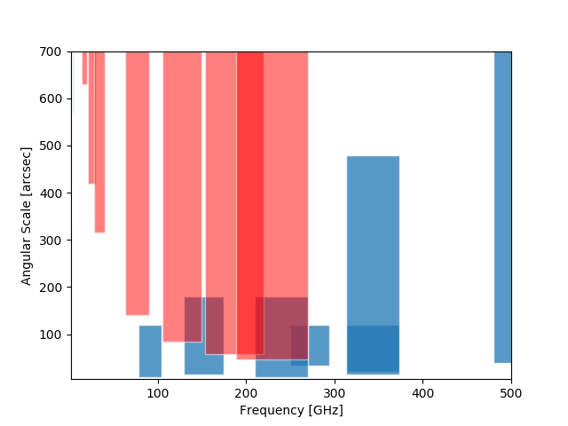
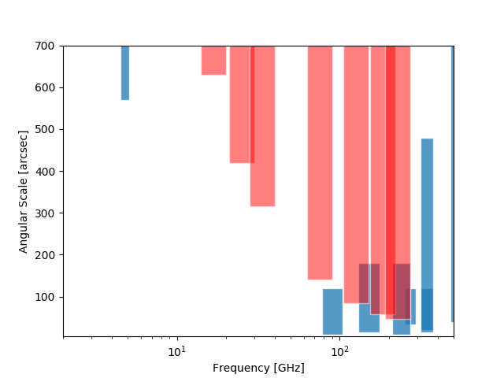

Slide 0 -
Instructions
:
To move slides, use the arrow keys or swipe on your mobile device
To see the speaker notes, press "s"
To go to full screen, press "f"
To print as PDF, go to this URL:
?print-pdf
, then print.
To get a PDF with speaker notes, add
?print-pdf&showNotes=true
to the URL.
Galactic Plane Surveys & CMB S4
New Galactic Plane Survey science enabled by S4
Angular scale recovery of existing mm GPSs is limited. Merging those with S4 data will allow measurements of:
Structure as a function of scale (power spectra)
Blob mass functions on fixed scale as a function of distance
[blob = pejorative catch-all for core, clump, whatever]
Improved SED modeling linked w/Herschel: separate grain size distributions from temperature variations
New Galactic Plane Survey science enabled by S4
GPSes cover limited latitudes. Off-plane surveying &arrow; complete surveys. Better total SFR measurement.
Survey free-free at higher resolution/LAS recovery than anything else [compare to: GLOSTAR 6cm, THOR 21cm JVLA]
Measure AME
Angular Scale / Frequency Coverage

Angular Scale / Frequency Coverage

Ongoing surveys to reach out to:
GASTON - IRAM NIKA2, PI Peretto
LMT AZTEC2/TOLTEC surveys - maybe only local planned?
MGPS90 - GBT MUSTANG-2, PI Ginsburg
JPS - JCMT SCUBA-2, Eden & Moore